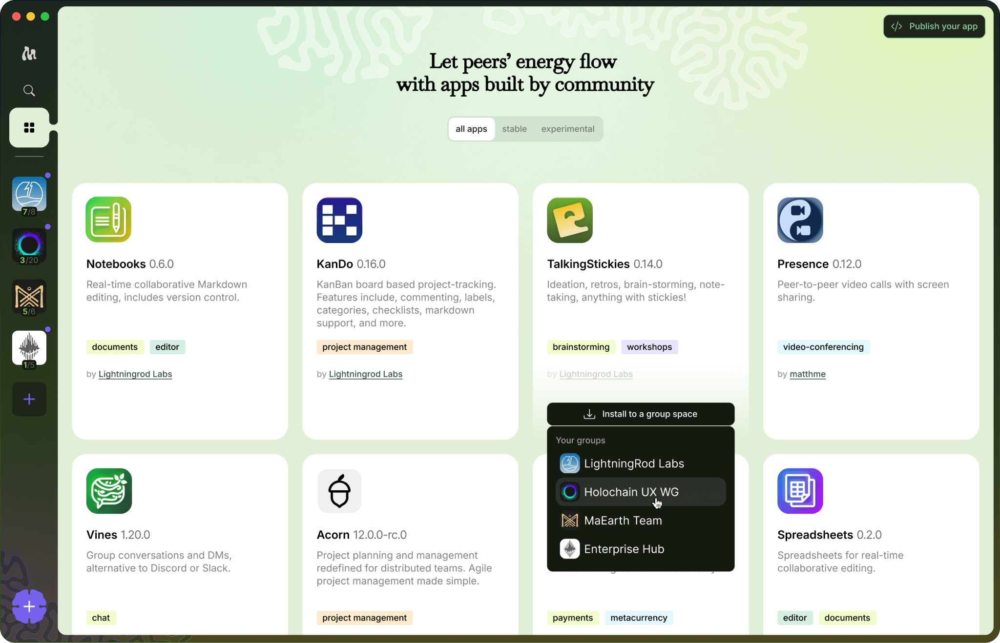
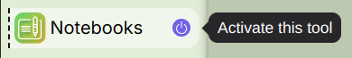

User Error
I recently worked with one of our Early Movers, who had reported a bug. After I asked a few questions about how to reproduce the problem, I got back an answer that was something like:
User error. I was using my mouse and I was right-clicking the button looking for the options from the drop-down menu, instead of clicking the button to execute it. When I did that, it worked like you said. My apologies.
That response left me feeling like something wasn't right. I don't actually think this was a "user error," and if I had accepted that, I would have missed a real opportunity. So instead I wrote back:
I think it's important not to think of this as a user error. What I'm hearing is that you had an expectation that you could right-click on something, and I think it's important to fulfill that expectation. That's what makes for a better user experience.
Then I wrote a very simple right-click handler that should have been there to start with.
This is a small example of what I want to happen with our Early Movers program, which is co-design. We think we've got something really cool that we're bringing into the world, but that "cool" has to meet the actual needs and expectations of folks who also see the cool but don't start from exactly where we start.
When the software works differently
The problem compounds when you design software whose basic operating assumptions differ from what people expect, as peer-to-peer groupware like Moss does. Here's a big example that's been really hard to get right, and I still don't think we have it right: the simple question of "installing a tool."
Most people know what it's like to install an app. You go to a website, or to the App Store or Play Store, click install, and bingo, you get a new icon you can click on and you're ready to go. In Moss we have two constraints that pull against each other, which makes the experience hard to get smooth:
- The tools you use live in a group context. Once one person decides to add a tool to the group, it exists for everybody.
- We don't want other people to be able to install software on our computers that we haven't agreed to.
So in Moss there's a tool library, where people can choose tools to add to the group. And then each person also has to "activate" the tool for themselves, which means giving consent to actually download and run it.


But when I watch what actually happens, this has been a huge source of trouble. People routinely install a new instance of a tool into the group when they should have just activated the existing one that was right there, waiting to be turned on.
Design error
When I've explained this to people, I get the same "oh, I'm sorry, user error." But really the problem is in my hands. It's a design error. In this case I think the problem is twofold. I've been using the word "install" for what happens when the person setting up the group registers a tool for the group and activates it for themselves at the same time. That creates confusion. And believe me, we've been through a bunch of rounds of changing the terminology (it used to be "join a tool," not "activate a tool") and more.
I think I have a new solution for this. It's not only to change the naming again, but also to remove the tool library icon from the main left-hand bar and leave that action only in the places where folks do group configuration.
But that's not the main point. The point is a version of "the customer is always right." Not fully that, because I'm also bringing something new. The "customer" has to be supported in understanding that newness, and I have to be supported in understanding how to deliver smooth pathways to sharing it.
That's what I hope to achieve with a mindset of co-design. If your group is interested, please join the Early Movers program!